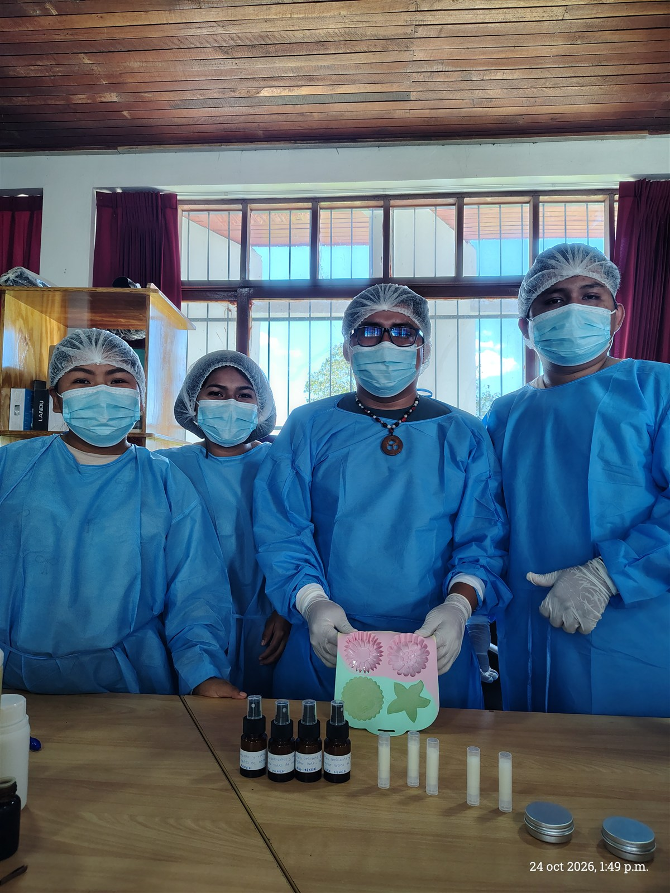
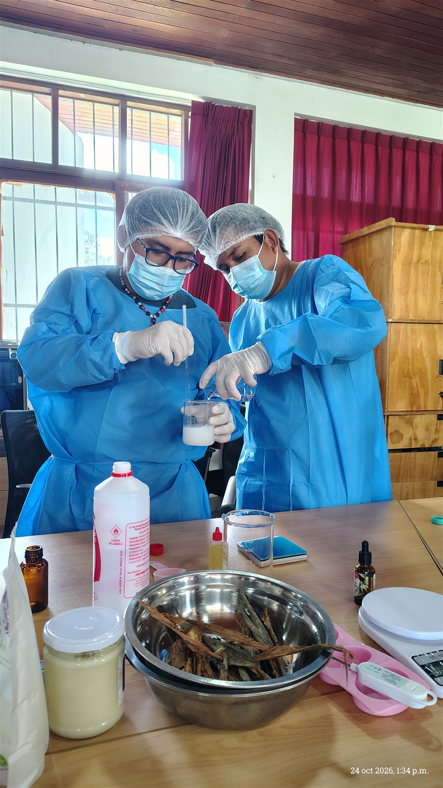
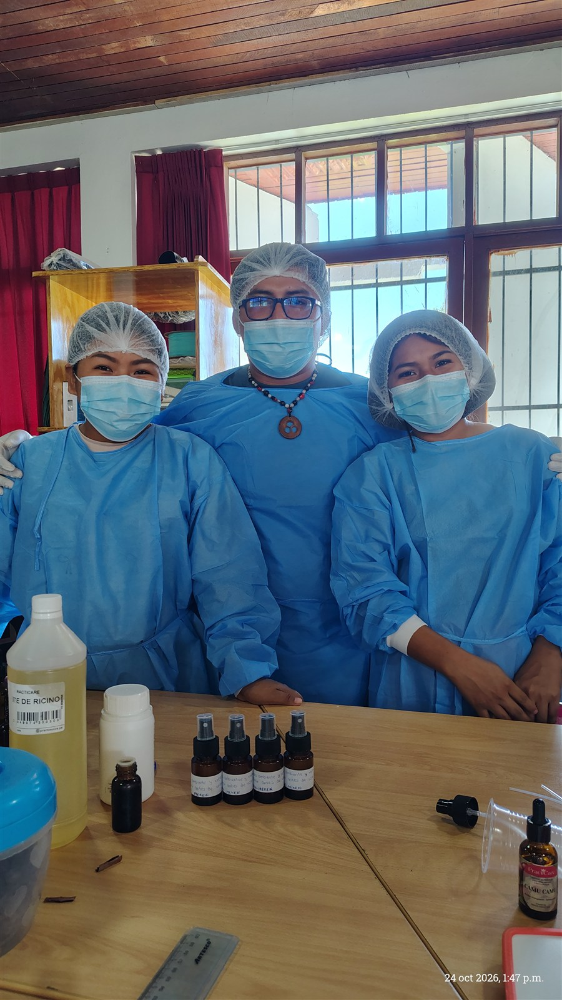
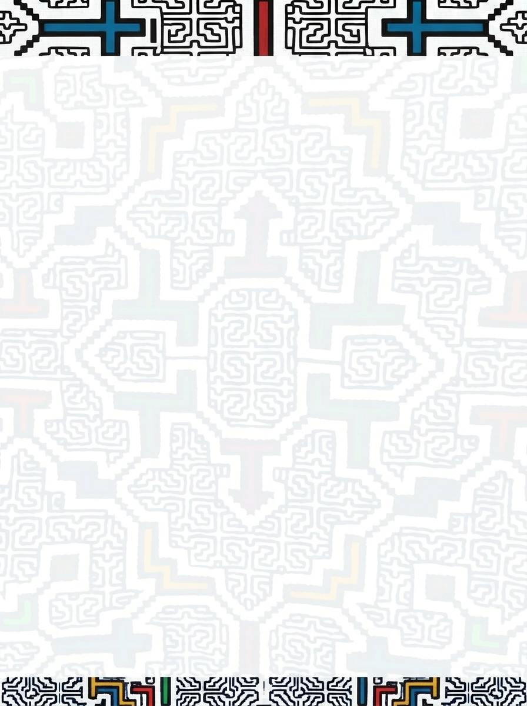

Elaboramos jabones artesanales puros de cacao y coco con el poder regenerador de la sangre de grado, complementados con joyería hecha a mano inspirada en el arte sagrado Shipibo-Konibo. Una iniciativa nacida en la Comunidad Tres Islas para empoderar a nuestras familias y proteger el corazón de la Amazonía.
La mano abierta de nuestra gente ofreciendo los dones medicinales del bosque: cacao silvestre, coco puro, resina de sangre de grado y la geometría protectora del Kené.
Nacemos en la Comunidad Nativa Tres Islas, Madre de Dios, para crear un puente tangible entre la sabiduría milenaria, el cuidado consciente del cuerpo y la protección activa de la Amazonía.
Nii Meken nace como una respuesta comunitaria para valorar nuestras raíces, diversificar las fuentes de sustento económico sin talar el bosque y convertir la riqueza botánica en salud y bienestar para las personas.
Promovemos la participación activa de las familias locales, fomentando el intercambio intergeneracional entre abuelas sabias, jóvenes emprendedores y artesanas expertas. Cada barra de jabón y cada joya porta el esfuerzo colectivo y la dignidad de nuestro pueblo.
"Cuando elaboramos un jabón o tejemos un diseño Kené, estamos honrando a la selva y recordando quiénes somos."
Conoce de cerca nuestro proceso: higiene rigurosa, materias primas puras del bosque y la energía transformadora de las y los jóvenes de Tres Islas.



Nuestra visión integra la salud dérmica, la memoria viva, la prosperidad comunitaria y el equilibrio ecológico en una misma dirección.
Jabones artesanales elaborados en pequeños lotes con manteca virgen de cacao, aceite puro de coco y la prodigiosa sangre de grado. Fórmulas libres de químicos sintéticos nocivos que nutren, restauran y protegen la piel de forma natural.
Piezas de joyería únicas hechas a mano que plasman el lenguaje visual del Kené. Geometrías sagradas que reflejan las constelaciones, los ríos y los cantos medicinales (ícaros), combinadas con semillas silvestres de recolección ética.
Valoramos y remuneramos dignamente las habilidades artesanales locales. Fortalecemos las capacidades de las mujeres y jóvenes emprendedores de la comunidad mediante talleres de capacitación técnica, gestión y preservación cultural.
Aprovechamiento no destructivo de recursos silvestres. Cada cosecha respeta el ciclo biológico del árbol de sangre de grado y las palmeras. Promovemos empaques biodegradables, cero plásticos y regeneración constante del bosque primario.
Cada producto es un homenaje a la generosidad de la selva y a la destreza de las manos artesanas que transforman elementos naturales en piezas de salud y arte.
Enriquecido con manteca de cacao silvestre y látex puro de sangre de grado. Potente regenerador dérmico, altamente antioxidante y nutritivo para pieles expuestas al sol y la rutina diaria.
Espuma suave y cremosa a base de aceite de coco virgen batido en frío con gotas de látex medicinal. Limpia en profundidad respetando la barrera cutánea y aportando frescura revitalizante.
Pieza de alta confección artesanal elaborada punto a punto por maestras artesanas con mostacillas finas y semillas de huairuro. Su trazo geométrico simboliza la energía protectora y el equilibrio.
Diseño delicado y contemporáneo inspirado en el fluir del río Ucayali y las plantas medicinales maestras. Tejido manual flexible con acabados hipoalergénicos y cuentas en tonos terracota y selva.
La experiencia total Nii Meken: un jabón de Cacao y Sangre de Grado, un jabón de Coco hidratante y una pulsera Kené tejida a mano, presentados en una caja ecológica de fibra vegetal amazónica.
Conocemos y respetamos cada planta. La selva nos brinda medicinas milagrosas que cuidamos y transformamos sin agotar su generosidad.
Látex rojizo extraído de la corteza del árbol amazónico mediante cortes superficiales respetuosos. Contiene taspina y un altísimo nivel de proantocianidinas, convirtiéndolo en uno de los cicatrizantes y regeneradores celulares naturales más poderosos del planeta.
Cultivado agroforestalmente en parcelas comunitarias libres de deforestación. Su manteca pura y sus flavonoides combaten el envejecimiento prematuro de la piel, restauran la elasticidad y proporcionan una emoliencia densa y aterciopelada.
Prensado en frío a partir de cocos maduros locales. Su contenido de ácido láurico provee propiedades antibacterianas e hidratación profunda, produciendo una espuma abundante y sedosa sin necesidad de espumantes sintéticos.
En la cultura Shipibo-Konibo, el Kené no es una simple ornamentación decorativa. Es una escritura sagrada, un mapa cósmico y una partitura visual. Los patrones geométricos son visiones que las maestras artesanas plasman tras dietas con plantas maestras, cantando los ícaros (cantos de sanación) mientras dan vida a cada trazo.
Refleja la piel de la anaconda celestial (Ronin), el curso de los ríos amazónicos y la red invisible que conecta a todos los seres vivos.
Transmitido de madres a hijas durante generaciones, el Kené es el alma cultural y el pilar económico de las mujeres artesanas.

Cada paso de Nii Meken está medido por el bienestar que genera en las familias de nuestra comunidad y por la salud de los bosques que custodiamos.
Sin microplásticos, sulfatos ni derivados petroquímicos contaminantes.
Cosecha no maderable y sistemas agroforestales de cacao y coco sostenibles.
Artesanas y recolectores con ingresos justos y autonomía económica directa.
Empaques reciclables, cajas de fibras locales y residuos compostables.
"La Amazonía no es un recurso que deba ser explotado; es un hogar vivo que nos alimenta, nos sana y nos inspira. Cuidar de nuestro cuerpo con el fruto sagrado del bosque y vestir el arte de nuestros ancestros es un acto de amor y resistencia por la vida de nuestro planeta."— Manifiesto Nii Meken • Comunidad Tres Islas
¿Deseas conocer más sobre nuestras producciones comunitarias, adquirir nuestros jabones o joyería Shipibo-Konibo, o colaborar con iniciativas de conservación amazónica? Escríbenos directamente.